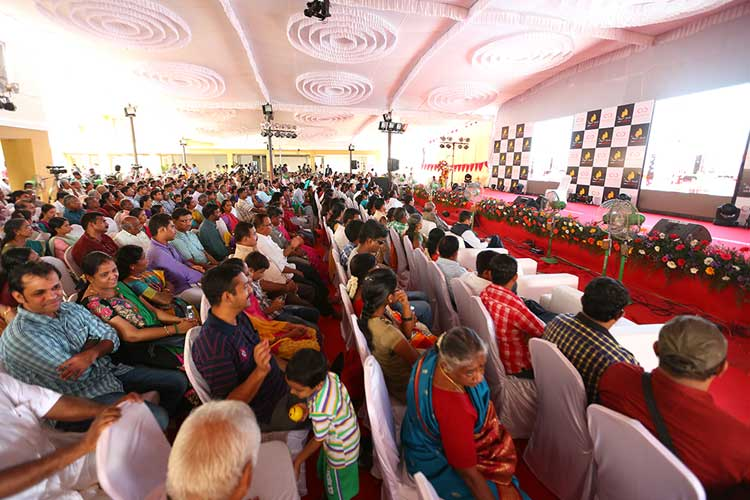

"The majority of the people vision about buying their dream residential abode in Chennai remarked in common review. However, the dream of public are satisfied only by few renowned builders like Amarprakash as the property developer offers Amarprakash Royal castle flats at a more economic plan friendly and financial way build understandable Amarprakash Royal Castle review. No people who come to Amarprakash would just be left with a dream; People can make their dream come true by purchasing a flat in Amarprakash Royal castle says Amarprakash Royal castle review. No people who come to Amarprakash would just be left with a dream; people can make their dream come true by owning an apartment in Amarprakash Royal Castle says Amarprakash Royal Castle review. With Amarprakash builders, people who dream to buy houses can buy Amarprakash Royal Castle houses at an reasonable price. Amarprakash Royal castle review explains clearly that people can even become an owner for villa by buying Amarprakash Royal Castle villa. According to Amarprakash royal castle review, people who have further confusion can go through this article about Amarprakash Royal Castle Township and can come to a conclusion about the Royal Castle project of Amarprakash.
Amarprakash Royal Castle flat - Get personal space by owning
 Amarprakash Royal castle review states that Amarprakash builders have constructed Amarprakash Royal Castle Township project within lush green environment. Amarprakash builders also provided garden by panting green trees, plants, herbs and lots more in Amarprakash Royal Castle project. So, people can enjoy the beauty of greeneries in Amarprakash Royal Castle apartment at their mere presence says Amarprakash Royal Castle review. In spite of Amarprakash Royal Castle review, general review about Amarprakash builders commonly reports that some people think that though Amarprakash builders construct Amarprakash Royal Castle Township with surroundings of greeneries, people can't experience a life as living in villa. But the common fact is people can live a life as in villa in Amarprakash Royal Castle apartment as Amarprakash Township is constructed in a vast area covering around 20 to 30 acres reports Amarprakash Royal Castle review. According to Amarprakash Royal Castle review, the residents of Amarprakash Royal Castle can lead a life closer to nature.
Amarprakash Royal castle review states that Amarprakash builders have constructed Amarprakash Royal Castle Township project within lush green environment. Amarprakash builders also provided garden by panting green trees, plants, herbs and lots more in Amarprakash Royal Castle project. So, people can enjoy the beauty of greeneries in Amarprakash Royal Castle apartment at their mere presence says Amarprakash Royal Castle review. In spite of Amarprakash Royal Castle review, general review about Amarprakash builders commonly reports that some people think that though Amarprakash builders construct Amarprakash Royal Castle Township with surroundings of greeneries, people can't experience a life as living in villa. But the common fact is people can live a life as in villa in Amarprakash Royal Castle apartment as Amarprakash Township is constructed in a vast area covering around 20 to 30 acres reports Amarprakash Royal Castle review. According to Amarprakash Royal Castle review, the residents of Amarprakash Royal Castle can lead a life closer to nature.
 Amarprakash builders not only construct Amarprakash Royal Castle houses in a spacious manner but also construct Amarprakash Royal Castle apartments with enough space. According to Amarprakash Royal Castle review, people won't face any space congestion problem in Amarprakash Royal Castle apartments. Additionally, in most of the apartments pet animals are not allowed inside the premises but Amarprakash builders allow pets inside Amarprakash Royal Castle Township. So Amarprakash Royal Castle review states clearly that people can lead a life without facing any issues in Amarprakash homes.
Amarprakash builders not only construct Amarprakash Royal Castle houses in a spacious manner but also construct Amarprakash Royal Castle apartments with enough space. According to Amarprakash Royal Castle review, people won't face any space congestion problem in Amarprakash Royal Castle apartments. Additionally, in most of the apartments pet animals are not allowed inside the premises but Amarprakash builders allow pets inside Amarprakash Royal Castle Township. So Amarprakash Royal Castle review states clearly that people can lead a life without facing any issues in Amarprakash homes.
Get personal space by owning Amarprakash Royal Castle flat:

General review states that personal space is an important Feature which most people look for in their house. People living in Amarprakash homes need not worry about personal space says Amarprakash Royal Castle review. Though the residents of Amarprakash have a sense of sharing the balcony and other amenities with their Amarprakash neighbors like other people living in other townships, but surely Amarprakash Royal Castle residents would enjoy such sharing. Amarprakash Royal Castle review explains that people who have bought apartments in The Royal Castle by Amarprakash are sure to have a kind of privacy and utmost freedom in their Royal Castle home. Amarprakash Royal Castle review says that the Royal Castle Township of Amarprakash is not only suitable for privacy lovers, but Amarprakash Royal Castle Township is also the best place for those who wish to live an integrated living says Amarprakash Royal Castle Thirumudivakkam review. Do you think how it is possible, the real fact is the residents of Amarprakash Royal Castle community are allowed to conduct parties and get-togethers in their Royal Castle house of Amarprakash? Amarprakash Royal Castle review says that the residents of the Amarprakash Royal Castle community can have happy times by conducting night parties as they wish.Amarprakash Royal Castle Review about Structure and Amenities:
 General review reports that the foremost thing most people look for when buying a flat or individual villa is the infrastructure and amenities. When it comes to Amarprakash Royal Castle community, the name itself gives people a mental image of something luxurious and convenient says Amarprakash Royal Castle review. High-end amenities are compulsory in Amarprakash projects. The residents of The Royal Castle Amarprakash are guaranteed of year full of smiles within Amarprakash Royal Castle premises states Amarprakash Royal Castle review.
General review reports that the foremost thing most people look for when buying a flat or individual villa is the infrastructure and amenities. When it comes to Amarprakash Royal Castle community, the name itself gives people a mental image of something luxurious and convenient says Amarprakash Royal Castle review. High-end amenities are compulsory in Amarprakash projects. The residents of The Royal Castle Amarprakash are guaranteed of year full of smiles within Amarprakash Royal Castle premises states Amarprakash Royal Castle review.
The interiors of Amarprakash Royal Castle homes are designed with reticulated gas supply, supply of sweet portable water, R.O system, power backup system and excellent interior designing says Amarprakash Royal Castle review. The entire Amarprakash Royal Castle gated community is equipped with a high-end facilities including fully equipped gym, swimming pool, mini theatre of Amarprakash Royal Castle, baby's day out, unisex saloon, Amarprakash Royal Castle multipurpose hall, ATM, sauna and Jacuzzi and many more says Amarprakash Royal Castle review. The residents of Amarprakash Royal Castle integrated community can have different variety of foods whenever they wish as coffee shops, multi cuisine restaurants and other hotels are available at just mins away from Amarprakash Royal Castle gated community states Amarprakash Royal Castle review. The residents of Amarprakash Royal Castle township can spend their leisure time usefully as playing zones like cricket practice nets, golf putting, skating rink, children's play area, badminton court, tennis court and lots more are at close proximity says Amarprakash Royal Castle review. These are the luxuries that can't be enjoyed by the residents of other projects reports Amarprakash Royal Castle review.
Amarprakash Royal Castle Review regarding Locality:
 Amarprakash builders not only provide ample number of facilities in Amarprakash Royal Castle Township, the builder also provide the residents of Amarprakash Royal Castle flats with good connectivity to all areas via flyovers, electric train service, bus facilities etc reports Amarprakash Royal Castle review. With electric train facility and new flyover projects in Chrompet, the residents of Amarprakash Royal Castle apartments can reach their destination within short time limit states Amarprakash Royal Castle review. Along with excellent connectivity, the residents of Amarprakash Royal Castle are blessed with easy commutation to their work place as Amarprakash builders have constructed Amarprakash Royal Castle Township near to IT/ITES companies, manufacturing industries and other companies according to Amarprakash Royal Castle review. This helps Amarprakash Royal Castle residents to spend more time with their family members' states the Amarprakash Royal Castle review.
Amarprakash builders not only provide ample number of facilities in Amarprakash Royal Castle Township, the builder also provide the residents of Amarprakash Royal Castle flats with good connectivity to all areas via flyovers, electric train service, bus facilities etc reports Amarprakash Royal Castle review. With electric train facility and new flyover projects in Chrompet, the residents of Amarprakash Royal Castle apartments can reach their destination within short time limit states Amarprakash Royal Castle review. Along with excellent connectivity, the residents of Amarprakash Royal Castle are blessed with easy commutation to their work place as Amarprakash builders have constructed Amarprakash Royal Castle Township near to IT/ITES companies, manufacturing industries and other companies according to Amarprakash Royal Castle review. This helps Amarprakash Royal Castle residents to spend more time with their family members' states the Amarprakash Royal Castle review.
 The location of Amarprakash Royal Castle Township is not only in prime area, but is also located in tranquil location states Amarprakash Royal Castle review. So the residents of Amarprakash Royal Castle gated community can lead calm and peaceful lifestyle without any disturbance says Amarprakash Royal Castle review. Along with this, the residents of Amarprakash Royal Castle apartment can live a safe and secure living says Amarprakash Royal Castle review. This is because Amarprakash builders have constructed Amarprakash Royal Castle Township by installing security intercom system, automatic door lock system and also provides round the clock security service says Amarprakash Royal Castle review. This helps the residents of Amarprakash Royal Castle flat to live a secured living as no trespassers can enter the Royal Castle Township by Amarprakash without the intimation of Amarprakash Royal Castle security guards.
The location of Amarprakash Royal Castle Township is not only in prime area, but is also located in tranquil location states Amarprakash Royal Castle review. So the residents of Amarprakash Royal Castle gated community can lead calm and peaceful lifestyle without any disturbance says Amarprakash Royal Castle review. Along with this, the residents of Amarprakash Royal Castle apartment can live a safe and secure living says Amarprakash Royal Castle review. This is because Amarprakash builders have constructed Amarprakash Royal Castle Township by installing security intercom system, automatic door lock system and also provides round the clock security service says Amarprakash Royal Castle review. This helps the residents of Amarprakash Royal Castle flat to live a secured living as no trespassers can enter the Royal Castle Township by Amarprakash without the intimation of Amarprakash Royal Castle security guards.
Amarprakash Royal castle review
Amarprakash developers not only concentrate in the location but also focus in constructing different types of houses reports Amarprakash Royal Castle review. Amarprakash Royal Castle Project is constructed with a variety of housing options like pent house, 1 BHK apartment, 2 BHK flat, 3 BHK home, studio apartment, Amarprakash Royal Castle duplex home and many more options. So, people can choose the right suited apartment as per their budget from Amarprakash Royal Castle project. Amarprakash Royal Castle review also provides first ever vegetarian block for their customers. So, people who want to live a life away from Non-Veg smell can book an apartment in Amarprakash Royal Castle vegetarian block says Amarprakash Royal Castle review. Amarprakash builders also construct vasthu complaint apartments in Amarprakash Royal Castle Township so people who are more cautious about vasthu can buy an apartment in Amarprakash Royal Castle gated community says Amarprakash Royal Castle review. Amarprakash builders created a milestone in homes by offering luxury as well as affordability in Amarprakash Royal Castle project says Amarprakash Royal Castle review. Amarprakash builders maintain the Royal castle township in an excellent manner so no single residents of the Royal Castle Township would have any negative review regarding the maintenance of Amarprakash Royal Castle premises. Additionally, the builder also charges minimum amount for the maintenance of the community, said Amarprakash Royal Castle review. This helps the residents of the Royal Castle community of Amarprakash to save their monthly income. Along with this, the residents of Amarprakash Royal Castle Township are guaranteed of good rental return as the Royal Castle apartments are high in demand among people informs Amarprakash Royal Castle review. So people who are living in the Royal Castle apartments of Amarprakash can have a good financial status. The Royal Castle Township not only provide good rental amount, but also provide good appreciation for the Royal Castle residents. So, the residents of the Royal Castle would never have financial problem says Amarprakash Royal Castle review. By reading through Amarprakash Royal Castle review about the Royal Castle community, you would have come to a conclusion that Amarprakash Royal Castle Township is a great place for people to reside. Book a flat in Amarprakash Royal Castle and live in natural surroundings.